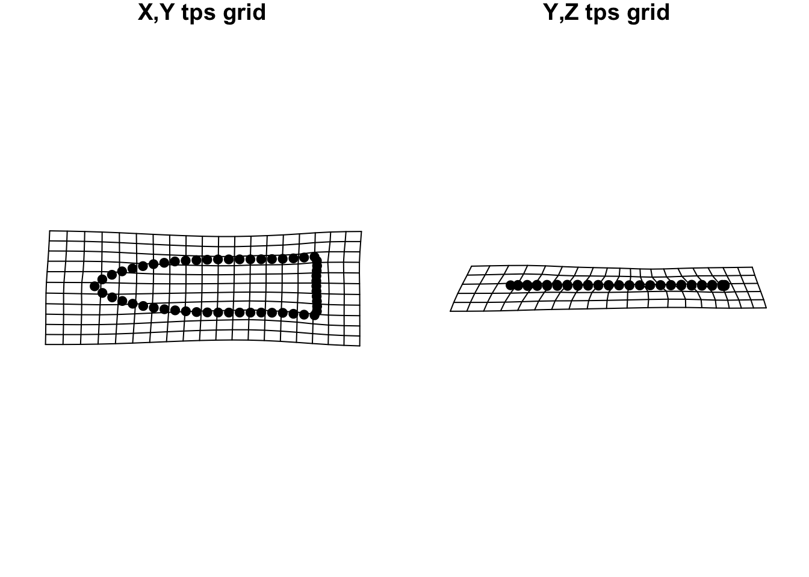

# set plot parameters to plot by contextpch.gps <-c(15,18)[as.factor(qdata$ColorGroup)]col.gps <- pal[as.factor(qdata$ColorGroup)]col.hull <-c("#798E87","#C27D38")## plot pca----pc.plot <-plot(pca, asp =1,pch = pch.gps,col = col.gps)shapeHulls(pc.plot,groups = qdata$ColorGroup,group.cols = col.hull)
# plot x/y maxima/minima# x - minimamean.shape <-mshape(Y.gpa$coords)plotRefToTarget(pca$shapes$shapes.comp1$min, mean.shape)
# x - maximaplotRefToTarget(pca$shapes$shapes.comp1$max, mean.shape)

# y - minimaplotRefToTarget(pca$shapes$shapes.comp2$min, mean.shape)
# y - maximaplotRefToTarget(pca$shapes$shapes.comp2$max, mean.shape)
Procrustes ANOVA
# MODEL: shape as a function of colorfit.shape <-procD.lm(shape ~ color,data = gdf,print.progress =FALSE,iter =9999)# ANOVA: do gahagan biface shapes differ by color?anova(fit.shape)
Analysis of Variance, using Residual Randomization
Permutation procedure: Randomization of null model residuals
Number of permutations: 10000
Estimation method: Ordinary Least Squares
Sums of Squares and Cross-products: Type I
Effect sizes (Z) based on F distributions
Df SS MS Rsq F Z Pr(>F)
color 1 0.018403 0.0184025 0.10084 4.374 1.9564 0.0176 *
Residuals 39 0.164084 0.0042073 0.89916
Total 40 0.182487
---
Signif. codes: 0 '***' 0.001 '**' 0.01 '*' 0.05 '.' 0.1 ' ' 1
Call: procD.lm(f1 = shape ~ color, iter = 9999, data = gdf, print.progress = FALSE)
# MODEL: size as a function of colorfit.size <-procD.lm(size ~ color,data = gdf,print.progress =FALSE,iter =9999)# ANOVA: do gahagan biface sizes differ by color?anova(fit.size)
Analysis of Variance, using Residual Randomization
Permutation procedure: Randomization of null model residuals
Number of permutations: 10000
Estimation method: Ordinary Least Squares
Sums of Squares and Cross-products: Type I
Effect sizes (Z) based on F distributions
Df SS MS Rsq F Z Pr(>F)
color 1 15260 15260 0.02621 1.0498 0.54482 0.3095
Residuals 39 566886 14536 0.97379
Total 40 582146
Call: procD.lm(f1 = size ~ color, iter = 9999, data = gdf, print.progress = FALSE)
2B-PLS: Shape
# 2B-PLS----# elemental dataelemental <- qdata %>%select(c(Al.K12:Zn.K12))## shape/elemental----# 2B-PLS (elemental) [shape/elemental]cor <-two.b.pls(A1 = Y.gpa$coords,A2 = elemental,print.progress =FALSE,iter =9999)# is shape correlated with raw material?summary(cor)
Call:
two.b.pls(A1 = Y.gpa$coords, A2 = elemental, iter = 9999, print.progress = FALSE)
r-PLS: 0.189
Effect Size (Z): -0.73753
P-value: 0.7941
Based on 10000 random permutations
2B-PLS: Size
# 2B-PLS----## size/elemental----# 2B-PLS (elemental) [size/elemental]cor <-two.b.pls(A1 = Y.gpa$Csize,A2 = elemental,print.progress =FALSE,iter =9999)# is size correlated with raw material?summary(cor)
Call:
two.b.pls(A1 = Y.gpa$Csize, A2 = elemental, iter = 9999, print.progress = FALSE)
r-PLS: 0.1599
Effect Size (Z): 0.05312
P-value: 0.4618
Based on 10000 random permutations
Mean shapes
# subset landmark coordinates to produce mean shapes for contextsnew.coords <-coords.subset(A = Y.gpa$coords,group = qdata$ColorGroup)names(new.coords)